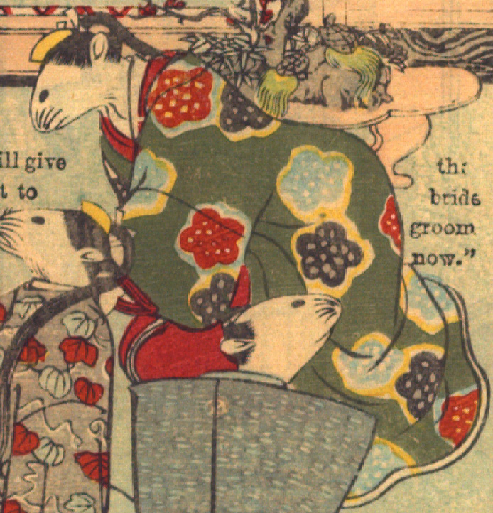

女の鼠。髪を後ろで一つにまとめ、簪を挿している。赤い着物に、花の柄が入った緑色の打掛をまとっている。座って、上半身をかがめている。
著作者：David Thompson／出典：親書誌：U426_nichibunken_0112：Nedzumi no Yome-Iri／日付：2006／資源識別子：U426_nichibunken_0112_0009_0004
Copyright (c)2010- International Research Center for Japanese Studies, Kyoto, Japan. All rights reserved.